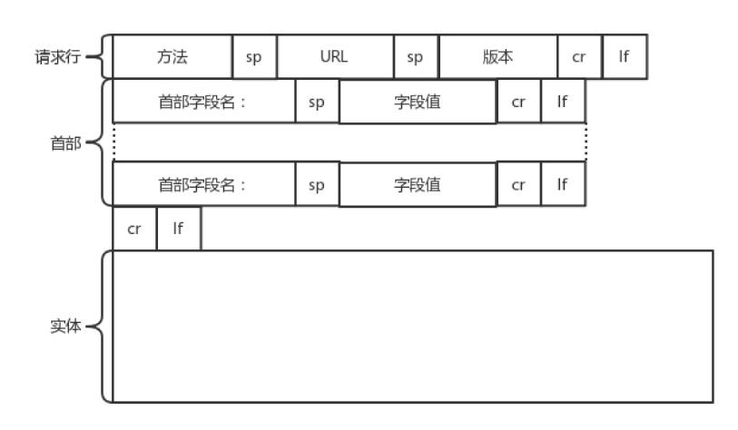
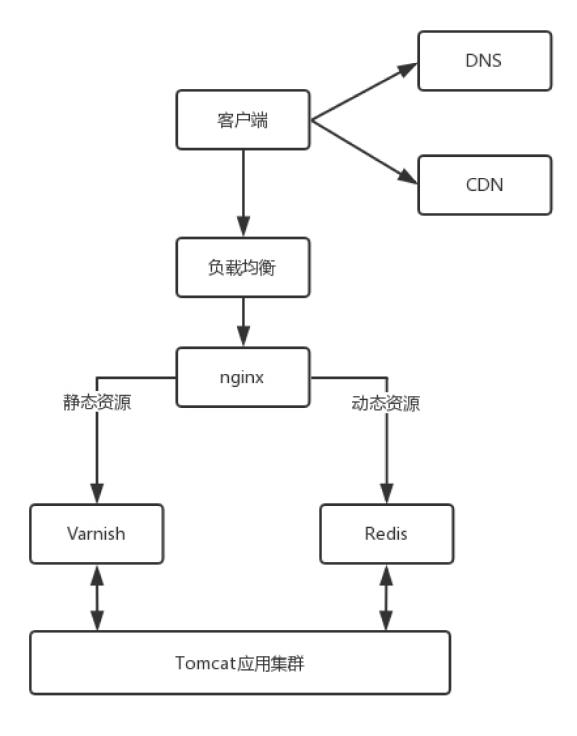
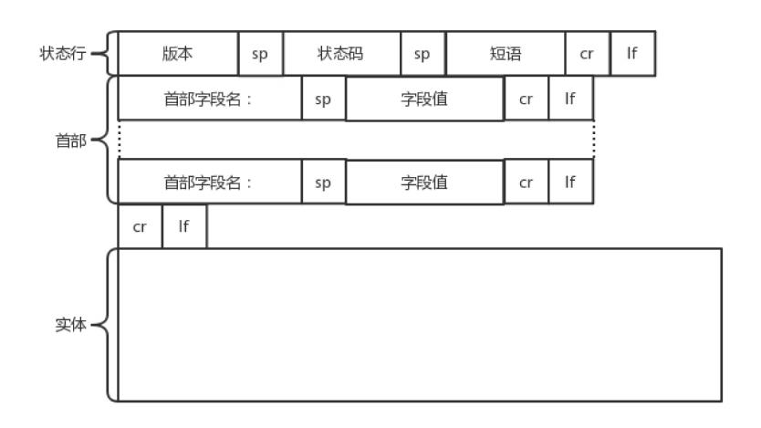
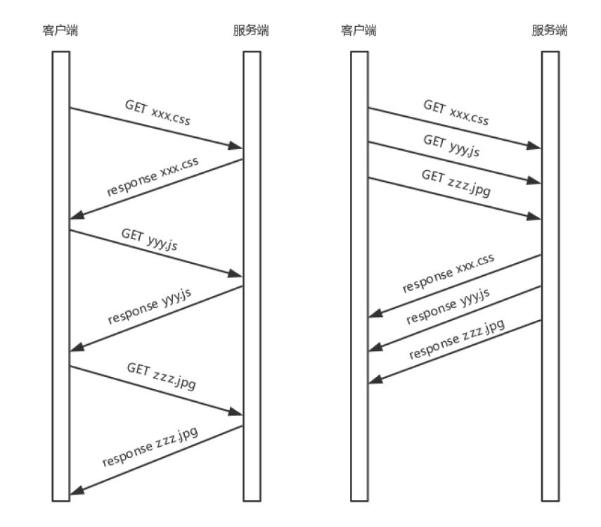
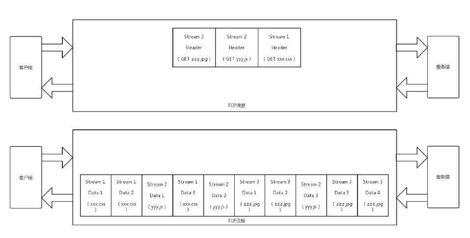

http://www.163.com 是个URL，叫作统一资源定位符。之所以叫统一，是因为它是有格式的。http 表示协议，www.163.com 是一个域名，
表示互联网上的一个位置。有的 URL 会有更详细的位置标识，例如 http://www.163.com/index.html。正是因为这个东西是统一的，所以当你把
这样一个字符串输入到浏览器的框里的时候，浏览器才知道如何进行统一处理。
www.163.com 这个域名发送给 DNS 服务器，让它解析为 IP 地址。Keep-Alive 的，Connection: keep-alive。这样建立的 TCP 连接，就可以在多次请求中复用。建立了连接以后，浏览器就要发送HTTP 的请求。

HTTP 的报文的三大部分：
URL 就是 http://www.163.com，版本为 HTTP 1.1。方法有几种类型, get,post,put,delete。
首部是 key value，通过 : 分隔。重点缓存，为啥要使用缓存？因为一个非常大的页面有很多东西。
例如，我浏览一个商品的详情，里面有这个商品的价格、库存、展示图片、使用手册等等。展示图片会保持较长时间不变，而库存会根据用户购买的
情况经常改变。如果图片非常大，而库存数非常小，如果我们每次要更新数据的时候都要刷新整个页面，对于服务器的压力就会很大。
对于这种高并发场景下的系统，在真正的业务逻辑之前，都需要有个接入层，将这些静态资源的请求拦在最外面。

和这一节关系比较大的就是 Nginx 这一层，它如何处理 HTTP 协议？对于静态资源，有 Vanish 缓存层。当缓存过期的时候，才会访问真正
的 Tomcat 应用集群。
在 HTTP 头里面，Cache-control 是用来控制缓存的。
HTTP 协议是基于 TCP 协议的，所以它使用面向连接的方式发送请求，通过 stream 二进制流的方式传给对方。当然，到了 TCP 层，它会把二进制流
变成一个的报文段发送给服务器。
IP 层 -> ARP 获取 MAC -> 路由器 -> 找到机器 -> 解析 MAC IP TCP 根据端口号 -> 找到 HTTP 服务，

返回报文的三大部分：
状态码会反应 HTTP 请求的结果。
首部是 key value，通过冒号分隔。
HTTP 1.1 在应用层以纯文本的形式进行通信。每次通信都要带完整的 HTTP 的头，而且不考虑 pipeline 模式的话，每次的过程总是像上面描述的那
样一去一回。这样在实时性、并发性上都存在问题。
为了解决这些问题，HTTP 2.0 会对 HTTP 的头进行一定的压缩，将原来每次都要携带的大量 key value 在两端建立一个索引表，对相同的头只发
送索引表中的索引。
HTTP 2.0 协议将一个 TCP 的连接中，切分成多个流，每个流都有自己的 ID，而且流可以是客户端发往服务端，也可以是服务端发往客户端。它其实
只是一个虚拟的通道。流是有优先级的。
HTTP 2.0 还将所有的传输信息分割为更小的消息和帧，并对它们采用二进制格式编码。常见的帧有 Header 帧，用于传输 Header 内容，并且会开启
一个新的流。再就是 Data 帧，用来传输正文实体。多个 Data 帧属于同一个流。
通过这两种机制，HTTP 2.0 的客户端可以将多个请求分到不同的流中，然后将请求内容拆成帧，进行二进制传输。这些帧可以打散乱序发送，然后根据
每个帧首部的流标识符重新组装，并且可以根据优先级，决定优先处理哪个流的数据。
举一个例子：
假设我们的一个页面要发送三个独立的请求，一个获取 css，一个获取 js，一个获取图片 jpg。如果使用 HTTP 1.1 就是串行的，但是如果使
用 HTTP 2.0，就可以在一个连接里，客户端和服务端都可以同时发送多个请求或回应，而且不用按照顺序一对一对应。

HTTP 2.0 其实是将三个请求变成三个流，将数据分成帧，乱序发送到一个 TCP 连接中。

HTTP 2.0 成功解决了 HTTP 1.1 的队首阻塞问题，同时，也不需要通过 HTTP 1.x 的 pipeline 机制用多条 TCP 连接来实现并行请求与响应；
减少了 TCP 连接数对服务器性能的影响，同时将页面的多个数据 css、js、jpg 等通过一个数据链接进行传输，能够加快页面组件的传输速度。